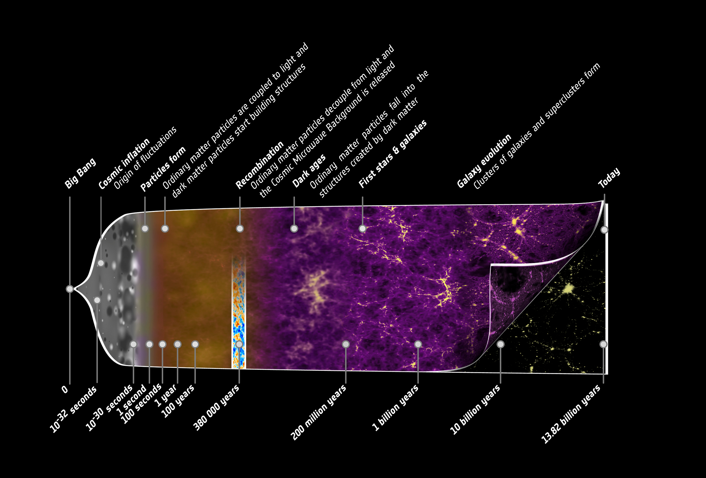
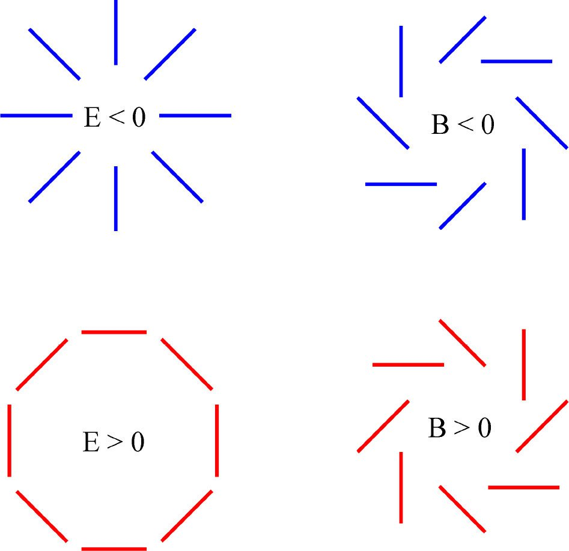
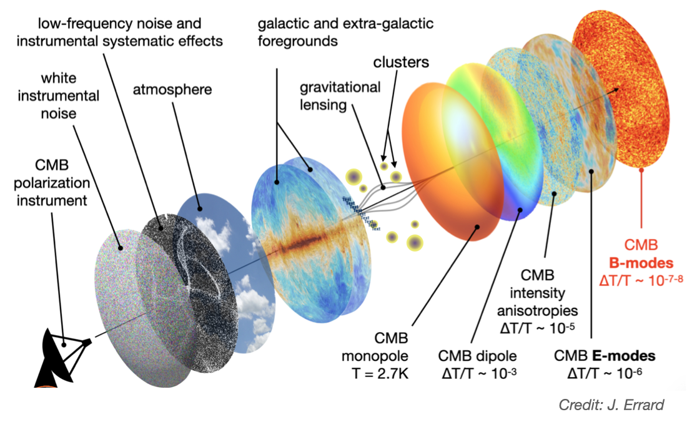
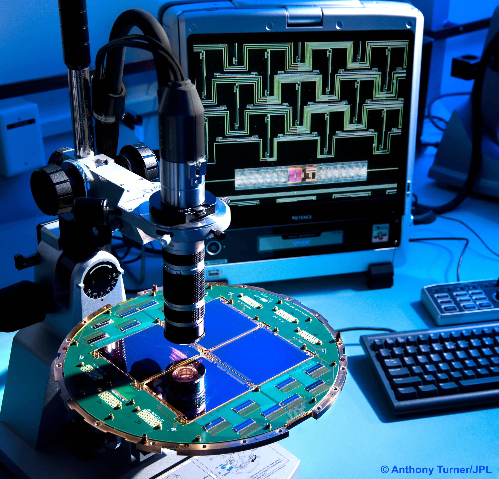
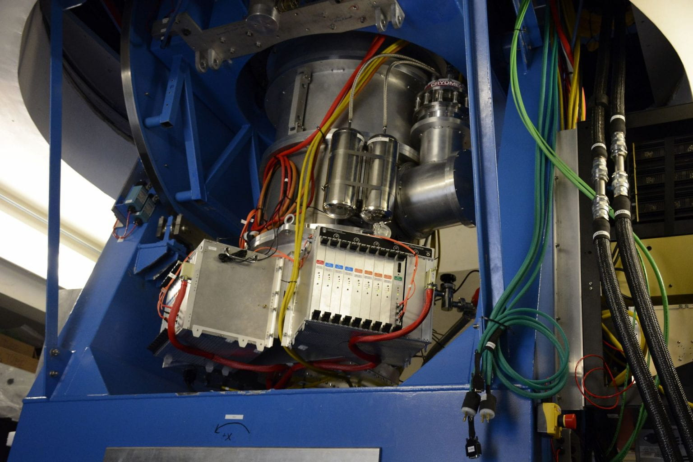
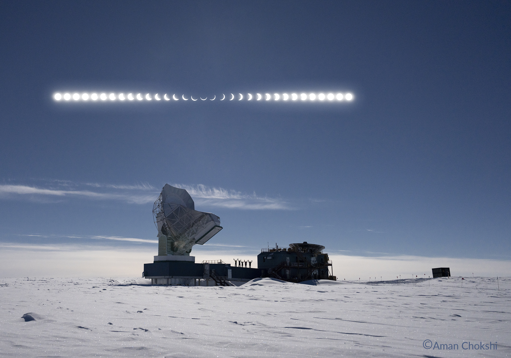

CMB Science
This page presents an overview of the B3DCMB project @ APC, and part of it is adapted from my PhD dissertation. I also recommend the website Universe Exploration by NASA for a broad overview of cosmology.
The birth of the Universe
Big Bang
According to the current dominant cosmological model, our Universe was born 13.8 billions years ago as a very hot and dense plasma, rapidly expanding and cooling down: this birth is commonly known as the Big Bang. During the early ages, this plasma was so dense that light was tightly coupled to it and could not escape from it. When cooling, the Universe evolved from this very dense, optically thick state to a less dense and cooler state. The first atoms formed, and photons escaped: the Universe became transparent to light, 380 000 years after the Big Bang. The moment when CMB photons are emitted is commonly refered to as the last scattering surface.
These photons have since then been traveling through space and time, cooling with the ongoing expansion of the Universe. Observed on Earth today, they form a spatially uniform and diffuse signal in the microwave domain: the Cosmic Microwave Background (CMB). The spectrum of the CMB is an almost perfect blackbody with a temperature of 2.7 K, corresponding to the temperature of the initial plasma redshifted by cosmic expansion. The observation and characterisation of the CMB and its features is one of the major domain of interest in modern cosmology.

Evolution of the Universe since the Big Bang (©: ESA – C. Carreau)
Inflation
In the 60's and 70's, first observations of the CMB and of the Universe at large scale have led to huge breakthroughs in our comprehension of cosmic history, but have also brought new questions. Two main characteristics of our Universe are indeed that it is flat – its global geometry shows no curvature in the context of Einstein’s general relativity – and isotropic – its content is the same, regardless the direction of observation.
However, according to the “classic” Big Bang model, regions of the sky separated by more than a few degrees should never have been in causal contact, so there is no particular reason for these regions to have a similar matter and energy content, or for the CMB to be almost uniform. Moreover, general relativity allows the Universe to have any curvature parameter between -1 (hyperbolic geometry) and 1 (spheric geometry), so why do we measure zero with a high level of confidence, which corresponds to the very particular case of flatness?
To solve these problems, the theory of inflation has been proposed and developed in the late 70's-early 80's. This theory – or more accurately this group of theories – postulates the existence of a extremely short and rapid phase of expansion at the very beginning of the Universe – lasting less than 10-33 seconds after the Big Bang! This expansion would explain how regions of the sky could have been in causal contact even if they are far apart today, and also would have flattened the Universe. It would also explain how initial quantum fluctuations have been magnified to give birth to the actual large scale structures, such as galaxies and cluster of galaxies.
CMB primary anisotropies
The CMB is almost uniform, but nevertheless presents small variations in temperature and polarisation. These variations can arise either from phenomenons happening when CMB photons are emitted – primary anisotropies – or from events happening between CMB emission and its detection on Earth – secondary anisotropies.
Temperature anisotropies
The CMB presents small variations of temperature, 5 orders of magnitude below the blackbody radiation. These variations are due to initial density fluctuations in the early Universe: photons emitted by denser regions of the plasma have more energy – they are “hotter” – than photons emitted by less dense regions. Temperature fluctuations of the CMB have been mapped with a high precision by the Planck satellite, as shown in top banner image.
Polarisation anisotropies
CMB light is polarised and shows polarisation anisotropies, that are even lower than temperature anisotropies. Polarisation anisotropies are created by Thompson scattering in the primordial plasma. The scattering of electromagnetic waves of different intensities (different temperatures) by free electrons produces polarised light. This scattering can only happen when the plasma is thin enough to let light go through it, but there still needs to be free electrons (not recombined into atoms) to scatter the light. Only a small fraction (10%) of the CMB signal is therefore polarised.
Because intensity of light coming from different directions is not the same, photons scattered in different regions of the sky do not result in the same polarisation, creating polarisation anisotropies. This linear polarisation can only be generated if intensity of incoming light varies at 90 degrees, meaning the distribution has a quadrupole pattern. These anisotropies find their origins in different physical processes, and cosmologists distinguish two types of resulting polarisation, called E-modes and B-modes.
E-modes
CMB primary E-mode polarisation is created by density fluctuations in the early Universe. These density fluctuations create a velocity gradient: photons are blue-shifted or red-shifted, and their scattering results in a polarised light. These velocity perturbations are scalar, and create symmetric, non-rotational pattern of polarisation over the sky, called E-modes (see figure below). These E-modes have been detected and measured for the first time by the instrument DASI in 2002, and have been studied by many experiments. The information content in this polarisation probes the same cosmology and physical processes as temperature anisotropies.
B-modes
When E-modes come from scalar perturbations (density fluctuations), B-modes can only be produced by tensor perturbations, which create a non-symmetric, rotational pattern of polarisation. The only mechanism that could create such perturbations in the early Universe are gravity waves. B-mode polarisation therefore probes a new, different early Universe physics than E-mode polarisation.

E and B-modes pattern
Looking for inflation
Inflation is thought to have produced gravitational waves in the early Universe, thus generating B-modes polarisation. The detection of primordial B-modes would therefore be a strong evidence for the existence of inflation - although other processes such as primordial binary black holes can generate primordial gravitatinal waves, but as they have other expected effects, it would be possible to distinguish them from inflation processes. The search for these modes is therefore central for our comprehension of the Universe. The intensity of primordial B-modes is related to the energy scale of the inflationary process, and depends on the intensity of tensor perturbations compared to scalar perturbations. The ratio between these two quantities, called the tensor-to-scalar ratio and usually denoted as r, is one of the crucial parameters that would give us information about inflation, and is what we are trying to measure through B-modes. The current upper limit is r < 0.036, with a 95% confidence level.
However, primordial B-modes are several orders of magnitude below temperature anisotropies and E-modes, and their detection is even harder because they are affected and/or overshadowed by effects occuring between the last scattering surface and CMB detection on Earth.
Lensing, foregrounds & cie
The primordial signal of the CMB is overshadowed by various effects happening on the line-of-sight between the last scattering surface and Earth. Some of them affect directly the CMB signal, generating so-called secondary anisotropies, while other are superimposed on the CMB signal, making it harder to distinguish from these external contaminations.
Secondary anisotropies
Interactions of CMB photons happening between the last scattering surface and their detection can be broadly divided in two categories: electromagnetic interactions of CMB photons with matter, and impact of gravitational fields.
Electromagnetic interactions
Interactions of CMB photons with matter occurs through two well-known scattering effects: Thompson scattering and inverse Compton scattering.
Thompson scattering - the same phenomenon that happen at the last scattering surface - is the scattering of CMB photons on free electron. It takes place at the reionisation epoch, when the Universe is progressively reionised by first stars emitting energy in the interstellar medium. CMB anisotropies generated by this effect, in particular in the E-modes polarisation signal, can thus be used to probe properties and parameters of the reionisation epoch.
Inverse Compton scattering happens locally between CMB photons and free electrons from hot ionised gas, for example emitted by Active Galactic Nuclei (AGN). These effects, known as Sunyaev-Zel'dovich effects, are used to study formaton, evolution and dynamics of galaxy clusters.
Gravitational effects
As the Universe expands and cools down, density fluctuations evolve into large scale structures such as filaments and galaxy clusters, through the gravitational collapse of matter. CMB photons travelling from the last scattering surface to the present time are therefore affected by gravitational potentials on the line-of-sight, which induce both large and small scale effects. At large scale, the CMB interacts with both large scale structures in the recent Universe, leading to an integrated effect over the line-of-sight - known as the integrated Sachs-Wolfe effects - and with rapidly evolving potentials due to emerging non-linear structures, leading to second order effects - the Rees-Sciama effect.
However, the most important source of secondary anisotropies from gravitational interactions comes from weak gravitational lensing of the CMB by galaxy clusters. Lensing does not generate new anisotropies on its own, but rather modifies pre-existing anisotropies, as different regions of the sky are affected differently depending on the matter distribution on the line-of-sight. The most significant effect of lensing is that it mixes CMB polarisation E- and B-modes, and in particular it generates lensing B-modes from primordial E-modes. This effect has thus to be carefully accounted for when looking for primordial B-modes, as the amplitude of lensing B-modes dominates those of primordial B-modes at the level that we are currently looking for.
Galactic foregrounds
Another family of contaminants for precision measurement of the CMB comes from our very own galaxy. The Milky Way, visible by eye on a clear sky, also emits in the submillimeter frequencies in which we observe the CMB. The main two contaminants are synchrotron radiation coming from electrons spiralling around galactic magnetic field, and thermal emission for interstellar dust. Even when choosing a clean patch of the sky away from the galactic plane, the low frequency synchrotron (dominant below 70GHz) and the high frequency dust (dominant above 150GHz) are seemingly impossible to disentangle from the faint CMB signal. This is all the more true in polarisation, for which galactic foregrounds always dominate the CMB signal.
To overcome this issue, precision measurements of CMB polarisation relies on multi-frequency observations to be able to isolate the CMB components from galactic emission, using a range of data analysis techniques know as component separation. Cross-correlation with other surveys that probe galactic emission and structure, such as neutral hydrogen distribution, are also of great help to be able to distinguish the CMB signal. As we progress towards the next-generation of CMB polarisation experiments, that will offer unprecedented raw instrumental sensitivity, we must also progress in our knowledge and modelling of galactic foregrounds, so that we can succeed in separating the CMB signal from the galactic signal.
CMB polarisation experiments
Before we can detect the signal of primordial B-modes, we therefore need to make our way through a forest of contaminants, from the Milky Way to distant galaxy clusters. Locally on Earth, we are also affected by the atmosphere, as well as noise and contaminants coming from the instrument itself. Detecting primordial B-modes is one of the most complex instrumental and data analysis challenges of modern physics, and designing and operating experiments to achieve this detection is not for the faint-hearted!

CMB experiment looking for B-modes through a maze of contaminants (Credit: Josquin Errard)
Ground-based CMB experiments are located in places where the atmosphere is very stable and dry - in other terms in high-altitude deserts. The two prime sites for CMB observations on Earth are the Chajnantor plateau in the Atacama desert in northern Chile, located at ~5200m, and the geographic South Pole, located at ~2900m. The atmosphere at the South Pole is particularly dry, and 6 months of continuous darkness makes it a prime site for deep observations of the CMB. The Chilean site is more exposed to atmospheric fluctuations but has access to a wider sky patch, making it an ideal site for so-called large scale observations, surveying a large patch of the sky with a very high angular resolution.
Telescope design for CMB observation is optimised depending on the science goal. As a rule of thumb, a smaller aperture means a wider field-of-view but a lower angular resolution, which is appropriate to look for large scale, primordial B-modes. Wider apertures correspond to a smaller field-of-view, but with a sharp angular resolution, favouring observation of more localised effects such as Sunyaev-Zel’dovich effects, or lensing B-modes. Regardless of specific optical designs, most CMB telescopes use Transition Edge Sensors (TES) bolometers to detect the incoming signal. These superconductive devices are operated at extremely low temperatures (100mK to 250mK - only a fraction of degree above the absolute zero!), and in vacuum. Only in such conditions can we hope to detect faint fluctuations in the CMB signal. Detectors are read-out using advanced electronic systems that multiplex and read a constantly increasing number of cryogenic detectors operating simultaneously, without affecting their signal or heating them.



Left: TES bolometers seen under a microscope at JPL - Center: Readout electronics on the BICEP3 telescope at the South Pole - Right: The South Pole Telescope and the BICEP3 experiment during a solar eclipse (Credits: Anthony Turner - Peter Rejcek - Aman Chokshi)
Team work makes the dream work! CMB scientists love nothing more but team-up within international collaborations to design, build and operate complex telescopes around the world and even in space. Below is a non-exhaustive list of past, current and future CMB experiments: